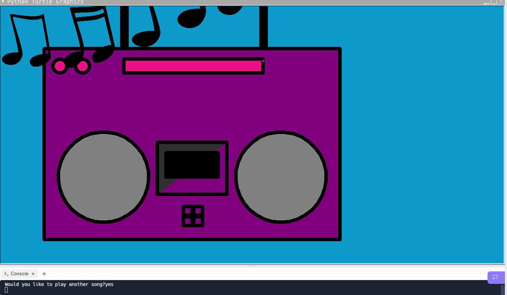

Home
Portfolio
About Me
This is my Portfolio Page!
1.1.9 Project: Stereo Simulation.



I did my project with my partner, Mikayla. We made a stereo simulation that first draws a stereo, and then asks the user if they want to play music. If the user says yes, then music notes will appear and go around the stereo to simulate music playing. Then, it will ask if they want to play another song, and it will do the same thing again.
Ping Pong Game

With my partners Kayden and Claire, we created an air hockey game that changes color each time the player hits the ball.
Interactive Fiction Rags to Riches.
Black Jack game written in Python.
Modified bits in pictures.
Use data files to create graphs.
Using netlogo do remix of illusions.
Interactive Fiction Rags to Riches.